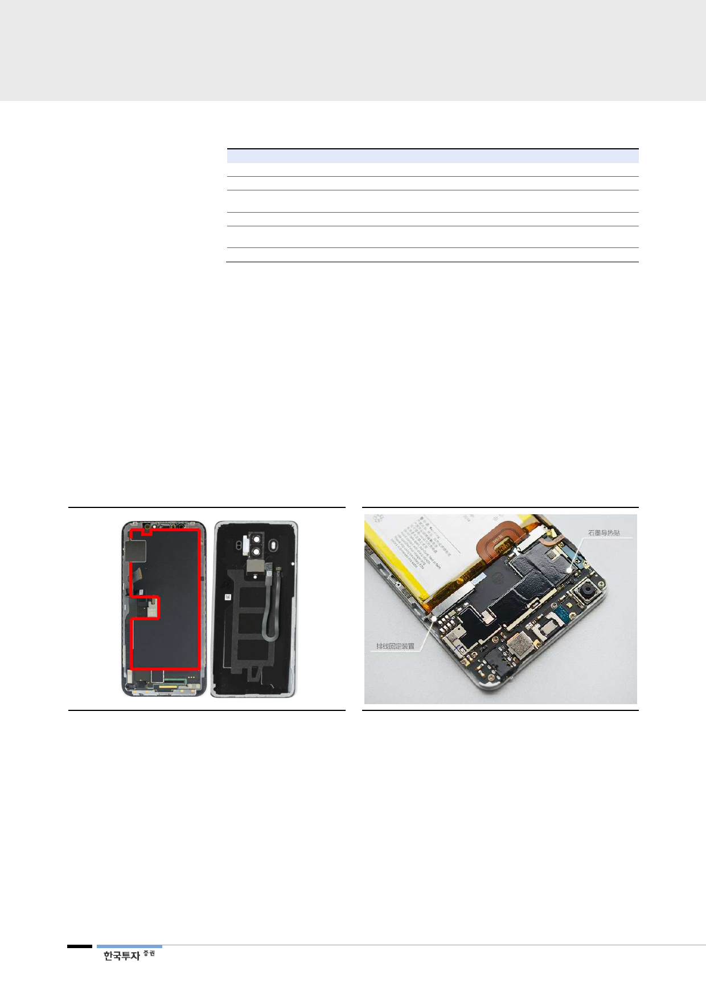

방열시트 수요 증가의
촉매제는 초고가 스마트폰인
애플 아이폰X 때문
<표 8> 방열시트가 요구되는 스마트폰 부품 및 발열 이슈
스마트폰 부품
배터리
디스플레이
스마트폰 AP
무선충전
후면 유리,
메탈케이스
카메라 모듈
자료: 한국투자증권
이슈
배터리 과열 방지, 발열 최소화
특정 부분에 과다한 열 발생
공정 미세화와 스펙 상향으로 발열 심화
과열에 따른 일시적 성능 저하
스마트폰 후면 부착 무선 충전 코일 과열
열 전도성이 높아 소비자측면에서
발열 이슈 발생
3D 카메라, 안면인식 센서 등 부품 집약
해결방안
방열시트 적용, 히트파이프 대체해 부피 최소화
패널 후면에 방열시트 전면 적용해 열 분산
방열 효율성을 높여 성능 개선
과열 방지 위해 방열시트 적용
효율적인 열 관리를 위한 방열시트 필요
부품의 원활한 작동을 위한 방열시트 필요
3Q17부터 방열시트 수요가 크게 증가해 2017년 방열시트 매출액 증가율은 68%
로 높았다. 이는 애플의 하이엔드 스마트폰향 방열시트 매출 때문으로 추정된다.
애플 아이폰X의 Logic 기판은 집적화를 극대화하기 위해 양면 기판을 도입하고
솔더(Solder)와 Via-hole로 기판을 연결해 집적도를 증가시켰다. 스마트폰 전체
면적에서 기판이 차지하는 면적이 크게 감소하면서 이에 따른 발열 증가 문제를
방지하기 위해 방열시트 및 솔루션을 확대 채택한 것으로 보인다. 아이폰 8과 8
Plus에서 일부만 적용됐지만 올해 발표할 차기 아이폰 전모델(LCD 및 OLED)
에서 방열시트가 전방위로 채택될 것으로 예상돼 관련 PI필름 매출액은 2배로 증
가할 전망이다.
[그림 18] 방열시트 적용: 패널 후면(좌), 외장 케이스(우) [그림 19] 초기 방열시트는 스마트폰 주요 부품에 부착
주: 좌측은 아이폰X, 우측은 화웨이 Mate 10 임. 두 모델 모두 프리미엄 모델임
자료: www.ifixit.com, 한국투자증권
주: 중국 스마트폰 업체 Vivo의 2016년 초 플래그십 폰 X6의 내부 모습
자료: www.myfixguide.com, 한국투자증권
중국의 OLED패널 채용과
무선충전의 적극적 도입이
방열시트 수요 증가를
이끌 것
중국 스마트폰업체향으로는 추가적으로 OLED패널 채용, 무선충전 도입, 트리플
카메라 채용 확대로 방열시트 수요가 증가할 전망이다. OLED패널은 LCD패널보
다 열에 취약해 방열이 필수적이고 무선충전 도입에 따른 발열 증가, 무선충전 도
입을 위한 스마트폰 후면 외장(casing)에 유리 채택, 카메라 성능 상향 등으로
중국 스마트폰에서도 발열 문제가 증가하기 때문이다.
12